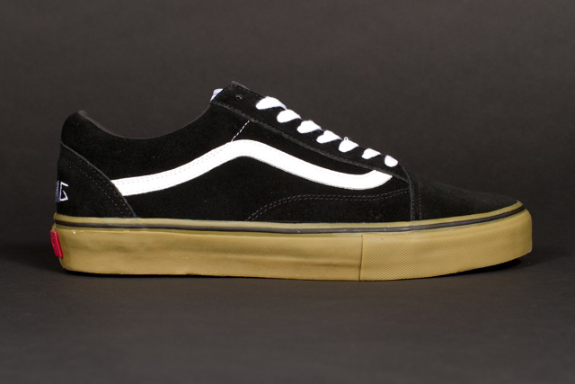
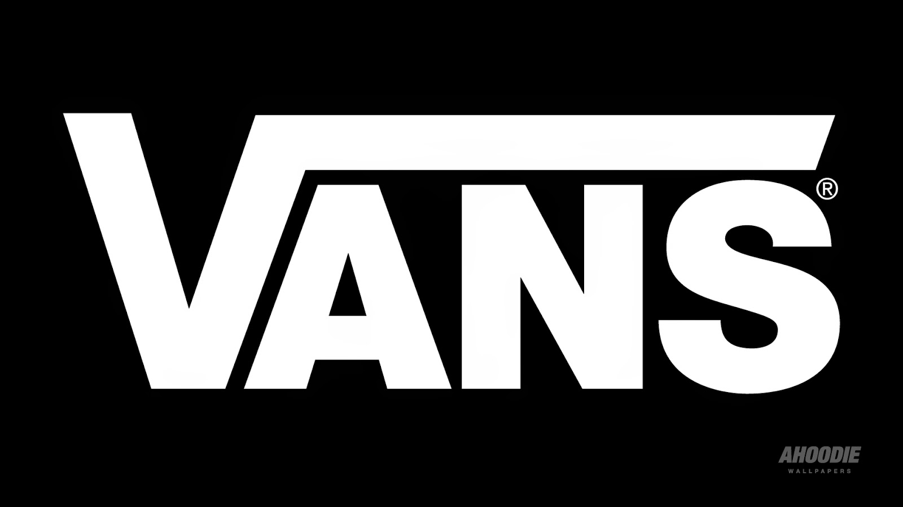
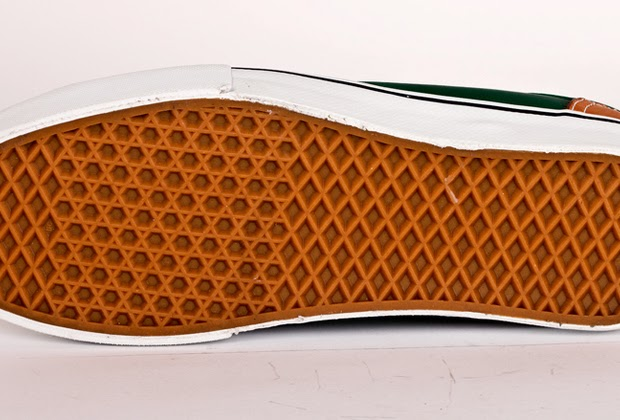
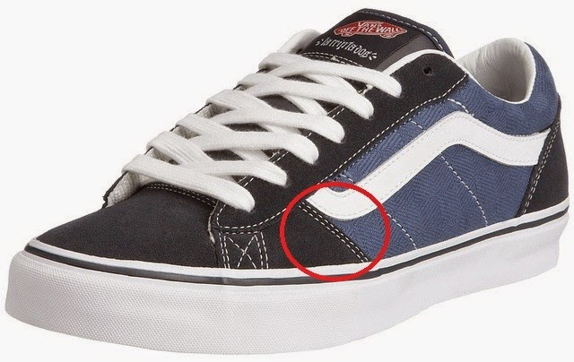
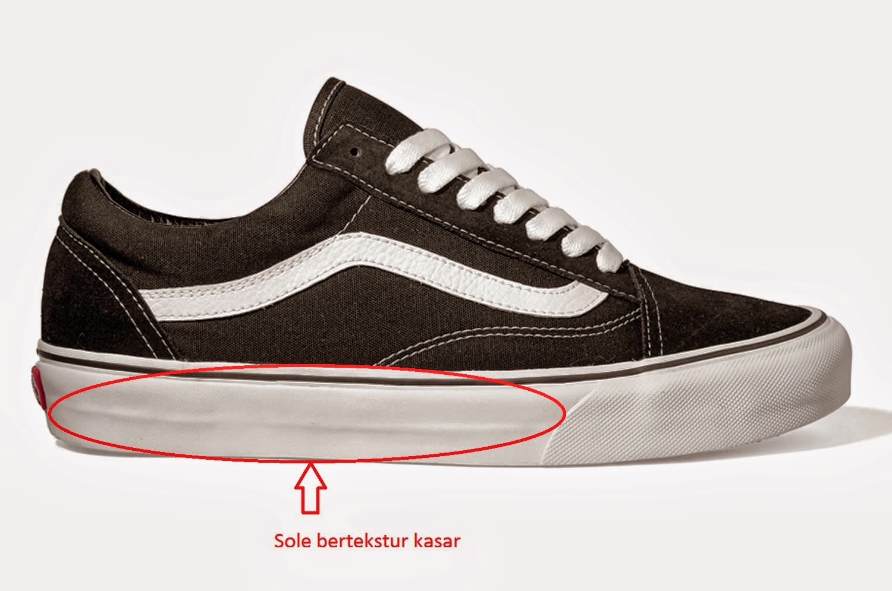

Cara membedakan Sepatu Vans Original dan Fake

1. Periksa Logo VansSemua sepatu Vans memiliki logo VANS ditulis dalam huruf Kapital. Huruf "V" akan terlihat seperti simbol akar. Kamu juga akan dapat melihat huruf "R" dalam lingkaran di sebelah logo.

2. Periksa Sole untuk Star of David didekat ujung kaki, Anda akan melihat pola enam bintang saling bersambungan.

3. Periksa JahitanSemua jahitan pada sepatu harus kuat dan sama. Coba untuk mencongkel jahitan menggunakan kuku, jika tidak keluar dari jahitan berarti asli Vans. Jika ada jahitan dua garis , maka jahitan harus identik dan jarak antara jahitan harus tetap sama.

4. Periksa Kualitas Karet Outsole dan Foxing TapeSepatu Vans memiliki bahan karet terbaik dan sol yang mudah ditekuk karena dirancang untuk extreme sports. Jadi cobalah membengkokkan sol Vans anda. Jika tidak mudah bengkok dan tidak lentur maka dipastikan Vans anda palsu.

5. Periksa HargaSepatu Vans umumnya harganya dimulai antara 600rb an. Jika ada orang yang menjual Vans jauh di bawah harga itu maka sudah dipastikan palsu.NB: Vans kode waffle GSI (pabrik Glow Star Indonesia), sukabumi made in Indonesia, banyak yang jual tidak resmi/blackmarket tapi pada intinya Original. Range harga 450-550rb.
6. Sesuai DesainPrint Model Vans dari website resmi. Cocokan setiap pola dan warna Vans sebelum membeli dari toko manapun.
7. Beli Vans dari Tempat yang Memiliki Reputasi/ResmiSelalu beli Vans dari website/store resmi atau dari tempat-tempat terkenal akan produk resmi Vans.
8. Hubungi Customer Service VansFoto sepatu Vans dari ponsel Anda dan kirimkan ke customer care Vans dan tunggu jawaban mereka.
9. Kode Waffle by WILLSNEAKERS
IFC: Made in China,
HF: Made in China Kedua kode ini menandakan Vans original, tetapi bukan jadi jaminan juga karena beberapa vans KW super/Replika juga mencetak kode serupa yang susah dibedain kalau sekedar lewat foto. Jalan satu-satunya ya dengan cek material, kerapian jahitan, kelengkapan (Box, Tag, dll).
DT: Made in China.
SHC: Made in China, Belum banyak yg tahu, mungkin termasuk pabrik Vans baru di china. Berdasarkan pengalaman lagi nih kode kami temuin di Vans keluaran baru, salah satunya Vans Era Van Doren Multi Stripes yg selama ini belum ada KW-nya.
Note: Bukan berarti Vans Van Doren Pack kode solenya SHC semua, kadang ada juga yg IFC, ZDC, karena yang bikin bisa lebih dari satu pabrik dan ini berlaku untuk beberapa jenis Vans lainnya.
ZDC: Made in China.
EVB: Made in Vietnam.
PA : Made in Thailand.
GSI: Made in Indonesia, Kebanyakan yang beredar di FJB barang Black Market/Ilegal dari pabrik Glow Star Indonesia(GSI) di Sukabumi. Dus, laces, kertas & tag biasanya terpisah, jadi jangan heran kalau harganya bisa lebih murah dari yang lain **note sudah ada GSI KW, tetapi dari bentuk dan kemiripan sama sekali jauh dari yang asli
GH: Made in U.S.A (Absolutely Fake alias PALSU)
Kalo cara di atas masih nggak ampuh, nih pake cara yang satu ini :
1. Cari nama rilisan resmi Vans yang akan lu beli, dianjurkan untuk bertanya pada seller yang bersangkutan.
2. Jika seller sama-sama tidak mengetahui nama rilisan alis blank-seller, telusuri nama rilisan via penampilan fisik sepatu.Contoh (1): apakah bertipe Authentic, Era, 106 Vulcanized, Old Skool, dsb.Contoh (2): tipe warna yang akan lu beli, apakah biru, maroon, pink, hijau dsb.Contoh (3): seri dari sepatu, apakah California, Vault, Classic, atau Syndicate.Contoh (4): aspek-aspek atau desain dekoratif yang ada pada sepatu, apakah dengan printing gambar band, bendera, burung, bintang, dsb.
3. Google/search pada browser nama rilisan tersebut, atau jika nama rilisan belum diketahui, gunakan logika sederhana dari empat contoh aspek fisik sepatu dan jadikan sebuah keyword dalam search engine, minimal dua aspek fisik harus lu gabungkan dalam proses pencarian agar lebih spesifik.Contoh (1): Vans Authentic Maroon RedContoh (2): Vans Era Navy Star Contoh (3): Vans Vault Mid Skool Orange-RedContoh (4): Vans Era Skate.
4. Setelah menemukan referensi gambar yang dirasa mirip atau diinginkan, kemudian perhatikan tingkat kemiripan dengan memperhatikan hal-hal ini: Bentuk sepatu, warna sepatu pada setiap bagiannya, warna jahitan sepatu pada setiap bagiannya, detil gambar pada bagian sepatu tertentu, warna dan bentuk foxing tape, warna dan pola bentuk outsole, dan terakhir adalah lining atau penggunaan material pada bagian dalam sepatu.
5. Untuk sekadar referensi, gw akan memberikan sedikit tips dalam membedakan setiap line-upnya:
California Series: Tipe line up ini cukup premium, jangan tertipu dengan harga murah tapi perhatikan kerapihan yang menjadi bagian dari sepatu series ini. Seri California menggunakan material yang berbeda dari biasanya dan terlihat sangat klimis dan rapih dengan mata awam sekalipun. Lining atau bagian dalam sepatu pun dibuat dengan sangat rapih dan tedapat siganure tulisan VANS CALIFORNIA pada bagian tumit yang sangat rapih. Insole juga menggunakan teknologi Ortholite dimana insole bagian bawah seharusnya berwarna hijau dan memiliki pad/busa yang lebih tebal pada bagian tumit.
Vault dan Syndicate: Hampir sama dengan line-up California, menggunakan material yang tidak sembarangan dan fabrikasi sepatu sangat rapih. Bedanya, kedua Vans ini dibanderol dengan harga yang lumayan lebih premium juga dan hanya dirilis pada butik-butik tertentu saja dengan jumlah terbatas. Tidak sembarang butik sepatu menjual sepatu dengan tipe ini karena rilisannya didasarkan pada sebuah issue khusus atau sebuah artikel khusus (collabs).
6. Kolaborasikan semua penemuan kamu dalam satu kesimpulan dan tariklah keputusan atas dasar riset sederhana tersebut. Ungkapkan pada forum ini jika dirasa masih bingung, utarakan hasil temuannya agar menjadi bahan share yang bermutu.